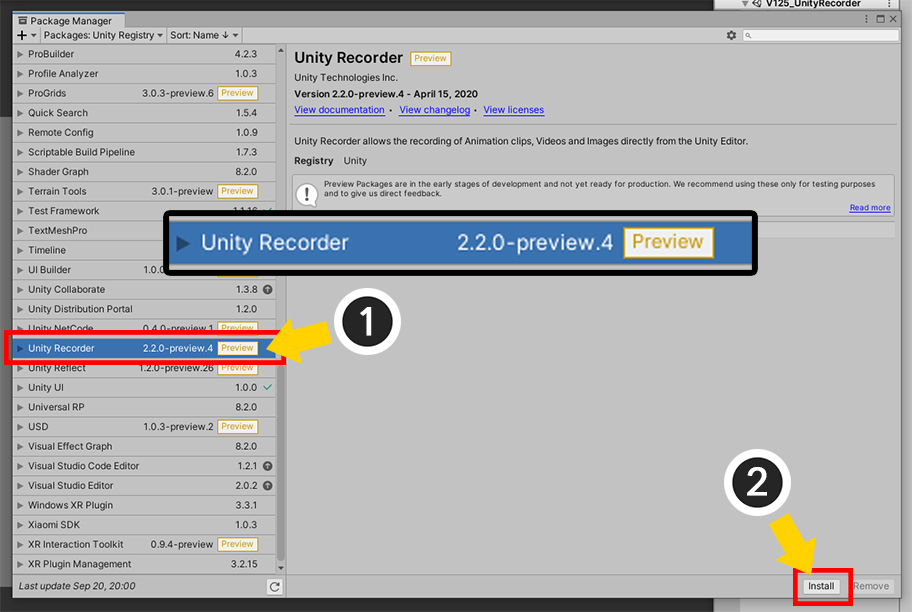
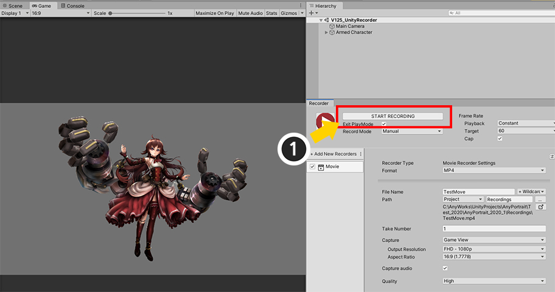
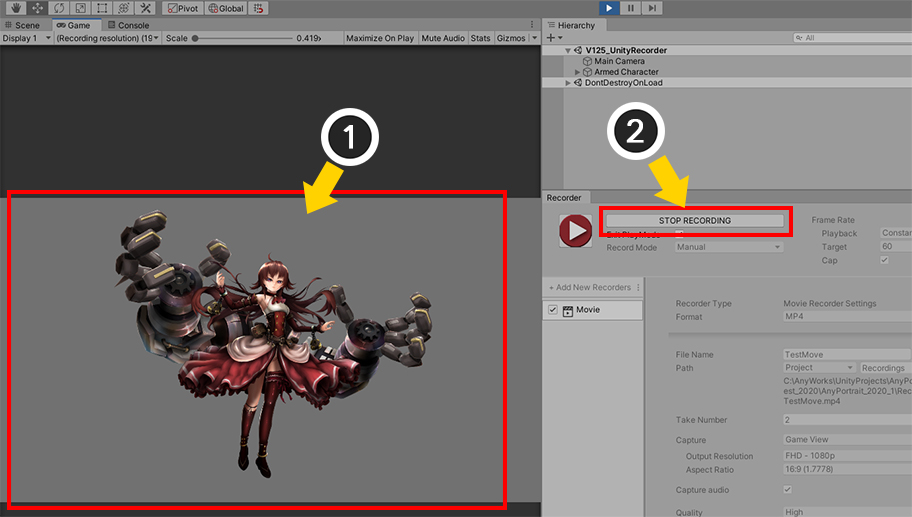
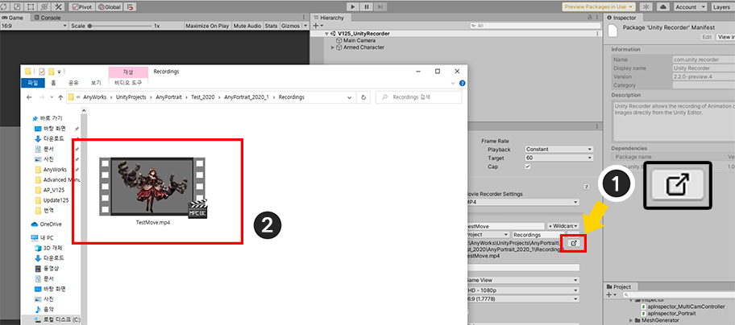
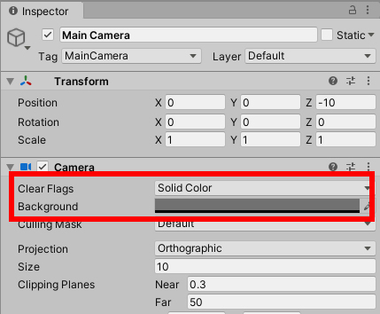
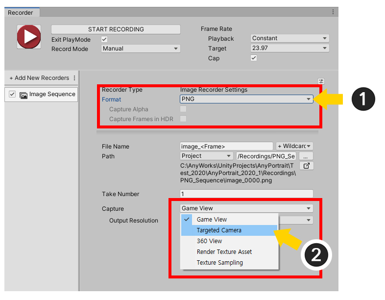
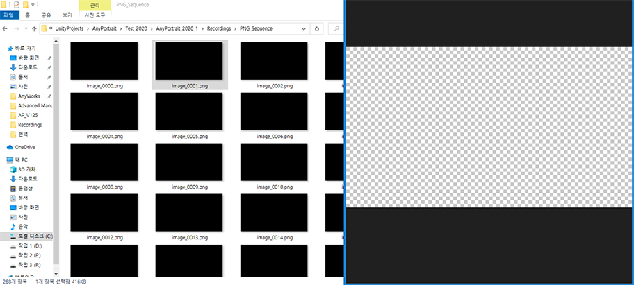
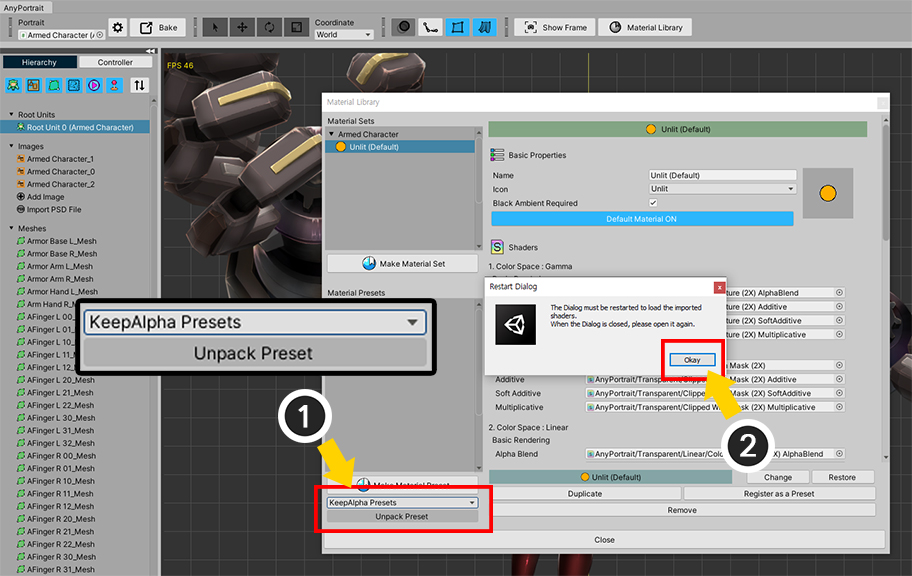
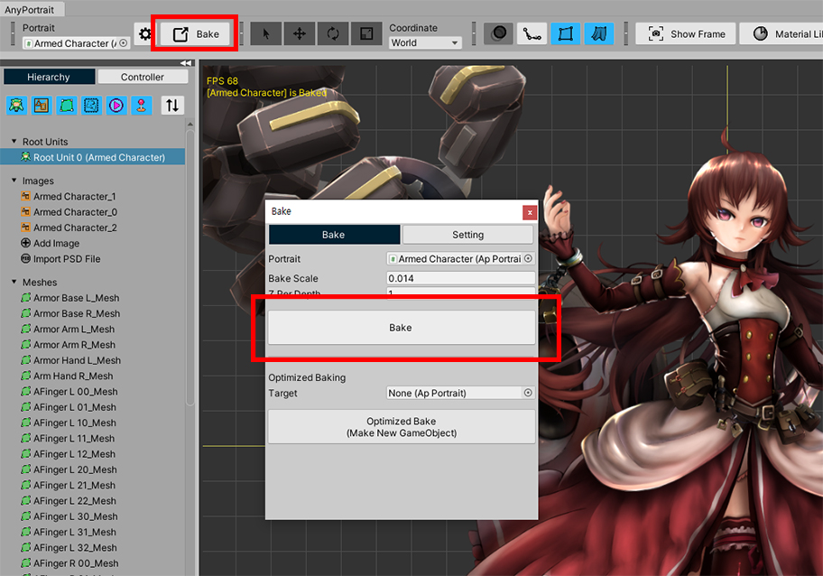
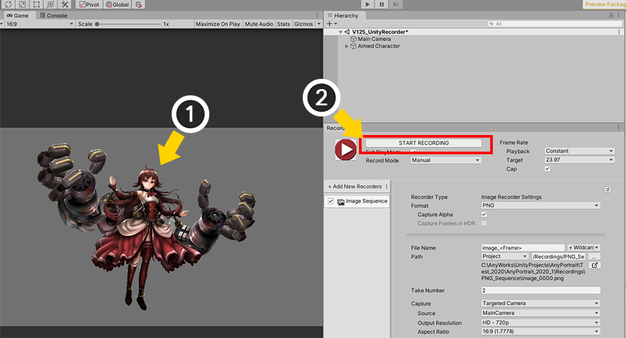

AnyPortrait > 메뉴얼 > Unity Recorder 사용하기
Unity Recorder 사용하기
1.2.5
유니티에서 제공하는 패키지 중에 "Unity Recorder"라는 재미있는 패키지가 있습니다.
이것은 유니티 에디터의 게임 중의 화면을 기록하여 이미지나 동영상으로 저장하는 기능을 제공하는 패키지입니다.
아직 Preview 단계의 패키지이지만, 의외로 많은 사용자들께서 AnyPortrait와의 호환성을 문의 주셨습니다.
이 페이지에서는 AnyPortrait로 제작한 캐릭터를 Unity Recorder로 촬영하는 방법을 설명하겠습니다.
아래의 페이지들을 같이 확인해보시는 것도 좋습니다.
- Unity Recorder 2.2 공식 페이지 (영어)
- 화면 캡쳐
안내 : Unity Recorder는 아직 Preview 단계이므로, 버전에 따라 이 페이지의 설명과 다소 다를 수도 있습니다.
이 페이지의 설명은 Unity 2020.1과 Unity Recorder 2.2를 기준으로 합니다.
Unity Recorder 패키지 설치하고 동영상 촬영하기

유니티 에디터의 Window > Package Manager를 선택합니다.

패키지 매니저가 열렸지만 리스트에 "Unity Recorder"가 보이지 않을 것입니다.
설정 버튼을 누른 후, Advanced Project Settings를 누릅니다.

(1) Enable Preview Packages 체크박스가 해제되어 있을 것입니다. 해당 옵션을 활성화합니다.
(2) 안내 메시지가 나타납니다. 확인 버튼을 누릅니다.

다시 패키지 매니저로 돌아옵니다.
이제 리스트에 Unity Recorder가 나타날 것입니다.
(1) Unity Recorder를 선택합니다.
(2) Install 버튼을 누릅니다.

패키지 매니저를 닫고, Window > General > Recorder > Recorder Window를 선택합니다.

Recorder UI가 나타납니다.
(1) +Add New New Recorders 버튼을 누릅니다.
(2) Movie를 선택해봅시다.

동영상 촬영을 위한 설정 화면이 나타납니다.
1. 동영상의 프레임 레이트를 설정할 수 있습니다.
2. 동영상 포맷을 MP4나 WEBM 중에서 선택할 수 있습니다.
3. 파일이 저장될 위치와 이름을 정할 수 있습니다.
4. 화면이 어떻게 녹화될지를 설정할 수 있습니다.
5. 동영상 품질을 선택할 수 있습니다.

동영상 촬영 설정을 한 뒤 녹화를 시작해봅시다.
유니티 씬에 AnyPortrait로 제작된 캐릭터가 배치되어 있으며, 게임이 시작되면 애니메이션이 자동으로 시작되도록 설정된 상태입니다.
(애니메이션을 자동으로 실행하도록 만드는 방법)
(1) Start Recording 버튼을 누릅니다.

(1) 게임이 자동으로 실행되고, 캐릭터 애니메이션이 재생됩니다.
(2) 동영상 촬영이 끝났다고 판단되면 Stop Recording 버튼을 누릅니다.

(1) 동영상 파일이 저장된 폴더를 열어봅시다.
(2) 동영상이 멋지게 저장된 것을 볼 수 있습니다.

동영상 촬영을 할 때, 동일한 이름으로 저장되도록 설정하면 계속 해당 파일이 덮어씌워질 수 있습니다.
이를 막기 위해, 위와 같이 파일 이름에 날짜, 시간, 촬영 번호 등을 추가할 수 있습니다.
투명한 배경의 이미지로 저장하기
배경을 투명하게 만들고 이미지로 저장하고자 할 필요가 있을 때, AnyPortrait로 제작된 캐릭터가 렌더링이 되지 않는 문제가 있습니다.
이 문제는 렌더 텍스쳐(Render Texture)에서의 문제와 동일합니다.
투명한 배경으로 렌더링 할때의 문제를 해결하는 방법은 아래의 설명 또는 관련 페이지를 참고해주세요.

투명한 배경으로 렌더링하도록 카메라 설정을 변경합니다.
Clear Flags를 Solid Color로 설정하고, Background 색상의 Alpha를 0으로 설정합니다.

+Add New Recorders 버튼을 누르고 Image Sequence를 선택합니다.

이미지 시퀸스 파일로 내보내기를 하면, 많은 수의 이미지 파일들이 생성되므로 별도의 폴더에 저장하는 것이 좋습니다.
(1) 저장되는 경로를 변경하는 버튼을 눌러서 (2) 비어있는 새로운 폴더를 선택해주세요.

(1) 파일 포맷을 PNG로 설정합니다.
(2) Capture 옵션을 Game View가 아닌 Targeted Camera로 변경하고, 선택된 카메라가 앞서 "투명한 배경색으로 렌더링하도록 설정된" 카메라인지 확인합니다.

(1) Capture Alpha 옵션을 체크합니다.
(2) 프레임 레이트를 설정합니다. 너무 많은 이미지 파일이 생성되지 않도록 적당한 프레임 레이트를 설정하는 것이 좋습니다.
(3) 화면 크기와 비율을 설정합니다.
(4) Start Recording 버튼을 눌러서 녹화를 시작해봅시다.

녹화를 마치고 폴더를 열어보면 캐릭터가 보이지 않고 투명한 이미지들만 생성된 것을 볼 수 있습니다.
이 문제는 렌더 텍스쳐에서도 동일하게 나타나는데, KeepAlpha 재질을 이용하여 이 문제를 해결할 수 있습니다.

다시 녹화하기에 앞서서, 잘못 녹화된 파일들을 모두 삭제합니다.

(1) AnyPortrait 에디터를 열고 캐릭터를 선택한 뒤, Material Library 버튼을 누릅니다.
(2) KeepAlpha Presets 패키지를 선택합니다.

(1) Unpack Preset 버튼을 눌러서 KeepAlpha Presets 패키지를 설치합니다.
(2) 설치 과정에서 재질 라이브러리가 닫힌다는 메시지가 나타납니다. 확인 버튼을 누릅니다.

다시 재질 라이브러리를 엽니다.
(1) Make Material Set 버튼을 누릅니다.
(2) 설치된 KeepAlpha 프리셋들이 나타납니다. 이미지 원본의 색상을 녹화한다면 KeepAlpha Unlit, 빛의 영향을 받는다면 KeepAlpha Lit 프리셋을 선택합니다.
(3) Select 버튼을 누릅니다.

(4) 새로운 KeepAlpha 재질 세트가 추가된 것을 볼 수 있습니다. 생성된 KeepAlpha 재질 세트를 선택합니다.
(5) Default Material 버튼을 눌러서 기본 재질로 설정합니다.

Bake를 실행합니다.

(1) 유니티 씬으로 돌아오면 재질이 변경된 캐릭터를 볼 수 있습니다. (KeepAlpha 재질은 대체로 기본 재질과 거의 같은 결과를 보여주며, 특히 KeepAlpha Unlit을 선택했다면 거의 동일하게 보일 것입니다.)
(2) Start Recording 버튼을 눌러서 녹화를 시작합니다.

녹화를 종료하고 저장된 이미지 파일들을 열어봅시다.
이제 투명한 배경에서 캐릭터만 렌더링된 결과를 볼 수 있습니다.